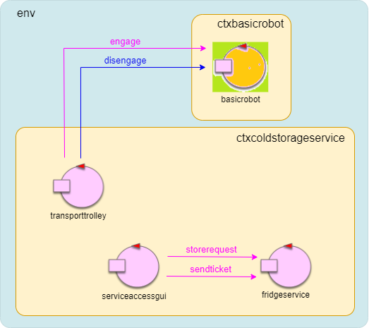

Introduzione
Nello SPRINT0 è stata effettuata l'analisi dei requisiti del sistema ColdStorageService da realizzare, che si è conclusa con un primo modello del sistema con la seguente architettura:In questo sprint andrò ad affrontare il problema della creazione del core applicativo del sistema.
Requisiti
Nello SPRINT1 si terrà conto solo dei requisiti associati alle seguenti user-stories:
1. "A Fridge truck driver uses the ServiceAcessGUI to send a request to store its load of FW kg. If the request is accepted, the driver
drives its truck to the INDOOR of the service, before the ticket exipration time TICKETTIME."
2. "When the truck is at the INDOOR of the service, the driver uses the ServiceAccessGUI to enter the ticket number and waits until the message
charge taken (sent by the ColdStorageService) appears on the ServiceAcessGUI. At this point, the truck should leave the INDOOR."
3. "When the service accepts a ticket, the transport trolley reaches the INDOOR, picks up the food, sends the charge taken message and then goes to the ColdRoom to store the food."
4. "When the deposit action is terminated, the transport trolley accepts another ticket (if any) or returns to HOME."
In particolare: si andrà a realizzare il il cuore del sistema sviluppando il FridgeService, il TransportTrolley e la ServiceAccessGUI.
In aggiunta al modello già prodotto precedentemente, si dovranno gestire i problemi del movimento del trolley e interazioni con basicrobot (e deposit action), la gestione di richieste multiple e l'interazione tra i tre componenti principali.
La parte di GUI della ServiceAccessGUI verrà ignorata in questo sprint e le interazioni con il TruckDriver saranno simulate dall'attore che modella la ServiceAccessGUI che ho già realizzato.
Analisi del problema
KeyPoints - Analisi del problema
- E' necessario utilizzare la rappresentazione a griglia della stanza e il concetto di step per sapere dove il Trolley è posizionato e per poterlo muovere in altre zone della service area.
- Si utilizza il messaggio moverobot del BasicRobot23 per spostare il Trolley in posizioni specifiche dell'area.
- Per provare ad ovviare al problema delle mosse fallite, si ritenta il posizionamento del robot inviando nuovi messaggi moverobot relativi alla posizione finale del movimento fallito.
- Il Trolley deve essere informato da qualcuno dell'arrivo di una richiesta. Questo viene fatto dal FridgeService tramite una richiesta takecharge, la cui risposta viene delegata alla ServiceAccessGUI per evitare di mettere in attesa il servizio.
- Il sistema deve permettere la gestione di richieste multiple. Si sfruttano le code di messaggi degli attori e la direttiva whenTime del linguaggio Qak per permettere al robot di prendere in gestione una nuova richiesta dopo il termine della precedente.
Il problema del posizionamento del trolley
Nel modello dello SPRINT0 i movimenti del Transport Trolley sono solo simulati. E' necessario trovare un modo per poter muovere il robot in posizioni specifiche della
service area per permettergli di effettuare tutte le azioni della deposit action.
Nello SPRINT0 ho già introdotto il concetto di service area come una griglia con celle di dimensioni RD (dimensione del robot):
Introducendo il concetto di step come un movimento elementare del DDR Robot che lo sposta in avanti di una lunghezza RD (unità robotica), è possibile costruire questa rappresentazione dell'area a celle (di dimensioni RD x RD). Lo step è incluso nel progetto BasicRobot23 fornito dal committente attraverso un comando
step:step(TIME), dove TIME
è il tempo necessario in millisecondi per muovere il robot di un'unità robotica.
Questa rappresentazione è necessaria perchè c'è la necessità di sapere in qualche modo dove il robot si trovi nella stanza per farlo spostare in altre zone della stessa.
Per la realizzazione della mappa il committente fornisce il progetto unibo.mapperQak23 (si veda anche Planner). Il BasicRobot carica la mappa della stanza quando viene inizializzato.
Nel caso del sistema da realizzare, la mappa avrà una rappresentazione del tipo:
|r, 1, 1, 1, 1, 1, 1,
|1, 1, 1, 1, X, X, 1,
|1, 1, 1, 1, X, X, 1,
|1, 1, X, 1, 1, 1, 1,
|1, 1, 1, 1, 1, 1, 1,
|X, X, X, X, X, X, X,
- 0 denota una cella mai percorsa
- 1 denota una cella libera
- X denota un ostacolo
- r denota la posizione corrente del robot
Rimane ora il problema di far muovere il robot in posizioni specifiche della service area. Un modo per costruire dinamicamente una sequenza di mosse con cui il robot
può muoversi dalla posizione corrente r a un’altra posizione (libera) sulla mappa, consiste nell’utilizzo di un pianificatore (si veda
Planning) come quello fornito dal committente in unibo.planner23-1.0.jar.
E' possibile inviare al basicrobot la richiesta
Request moverobot : moverobot(TARGETX, TARGETY)Reply moverobotdone: moverobotok(ARG)Reply moverobotfailed : moverobotfailed(PLANDONE, PLANTODO)Dispatch setdirection : dir( D )
Nel caso in cui la richiesta moverobot fallisca, ho deciso di far riprovare l'ultima mossa al robot finchè non riesce. Per fare questo ho introdotto una enum class di utilità chiamata
MoveType:
enum class MoveType {
MOVETOINDOOR, //moving action to INDOOR
MOVETOCR, //moving action to PORT of coldroom
MOVETOHOME //moving action to HOME
}
Tramite questa classe mi salvo in una variabile LastAction l'ultima azione di movimento provata ad eseguire. Quando arriva la risposta moverobotfailed il Trolley
passa a uno stato tryAgain dove in base al valore di LastAction riprova ad effettuare l'azione. Questo viene fatto a un massimo di N mosse fallite, oltre le quali
il sistema si chiude per troppi errori.
Interazione tra i componenti del sistema
Il Transport Trolley deve in qualche modo essere informato di una richiesta di cui prendersi carico. Questo passaggio viene effettuato dal FridgeService
che invia la richiesta
Request takecharge : takecharge(TICKET)Reply chargetaken : chargetaken(_)Gestione di richieste multiple
Il sistema è già impostato per permettere l'arrivo di richieste multiple. Infatti, dopo l'arrivo di una storerequest, il FridgeService si rimette in attesa
di nuove richieste, che possono essere l'inserimento di un ticket ma anche una nuova storerequest. Il servizio tiene già traccia delle richieste aperte salvandole in una lista
(openRequestList), che permette anche la differenziazione tra le tali (associando la scadenza del biglietto e il peso del carico al numero di biglietto).
Ci sono però alcuni cambiamenti da fare alla logica del sistema per far sì che questo funzioni correttamente. Nel primo prototipo realizzato, la variabile che tiene conto della quantità
di cibo depositata nella coldroom (CurrentlyStored) viene aggiornata con la nuova quantità della richiesta subito dopo che il relativo ticket viene accettato. Questo però
può creare problemi nel caso in cui più richieste di deposito vengano inviate prima che il truck driver arrivi ad inserire il biglietto, perchè ogni nuova richiesta
farebbe il check della quantità depositabile con la variabile CurrentlyStored non ancora aggiornata con le quantità delle precedenti richieste accettate. Quindi è opportuno aggiornare la variabile CurrentlyStored
subito dopo che la storerequest viene accettata (quindi prima che il driver arrivi nella INDOOR a caricare il biglietto). Facendo in questo modo bisogna
però tenere conto della possibilità che il ticket scada e quindi che la richiesta sendticket venga rifiutata. In questo caso si sottrae dalla variabile il carico del ticket rifiutato.
Un ultima aggiunta da fare è quella di permettere al Transport Trolley di prendersi in carico di un'altra richiesta subito dopo aver terminato la precedente deposit action.
Possiamo sfruttare le code di messaggi di cui ogni actor è fornito: il FridgeService non deve preoccuparsi del fatto che il robot stia o non stia eseguendo una deposit action
prima di inviargli una richiesta, perchè grazie al funzionamento degli ActorFSM se il robot è in uno stato diverso dal waitingRequest semplicemente inserirà ogni nuova richiesta nella sua coda dei
messaggi, per elaborarla solo dopo che avrà finito con la richiesta precedente. Più in particolare, possiamo sfruttare la direttiva whenTime del linguaggio Qak per dare tempo al
robot di verificare se ci siano nuove richieste, e in caso contrario tornarsene alla HOME:
Transition t0 whenTime 1000 -> moveToHome
whenRequest takecharge -> moveToIndoor
Progettazione
Di seguito sono mostrati i messaggi utilizzati dal sistema:
// ----- Messaggi per le interazioni con il basic robot -------
Request engage : engage(OWNER,STEPTIME) //richiesta di ingaggio
Reply engagedone : engagedone(ARG) //risposta di conferma di ingaggio
Reply engagerefused : engagerefused(ARG) //risposta di rifiuto di ingaggio
Dispatch disengage : disengage(ARG) //messaggio di disingaggio
Request moverobot : moverobot(TARGETX, TARGETY) //richiesta di muovere il robot in una determinata posizione
Reply moverobotdone : moverobotok(ARG) //risposta di conferma del movimento a posizione
Reply moverobotfailed : moverobotfailed(PLANDONE, PLANTODO) //risposta di movimento a posizione non riuscita
Dispatch setrobotstate : setpos(X,Y,D) //aggiorna la mappa con la nuova posizione e direzione
Dispatch setdirection : dir(D) //aggiorna la posizione del robot con la nuova direzione
//--------------------------------------------------------------------
//-----------------------Messaggi applicativi------------------------
Request storerequest : storerequest(KG) //richiesta di depositare un food load
Reply loadaccepted : loadaccepted(TICKET) //risposta di accettamento richiesta del load
Reply loadrefused : loadrefused(_) //risposta di rifiuto richiesta del load
Request sendticket : sendticket(TICKET) //richiesta per inviare il ticket al servizio
Reply chargetaken : chargetaken(_) // messaggio che invia il servizio per prendere in carico una richiesta
Reply ticketrefused : ticketrefused(_) //messaggio che invia il servizio se il ticket è scaduto
Request takecharge: takecharge(TICKET) // richiesta che il servizio invia al robot per prendersi in carica di una deposit request
Dispatch tryagain: tryagain(_) // messaggio che si invia il robot per riprovare una mossa fallita
//------------------------------------------------------------------
ServiceAccessGUI
La ServiceAccessGUI è rimasta invariata rispetto allo SPRINT0.
FridgeService
QActor fridgeservice context ctxcoldstorageservice{
[#
val MAXW = 100 //max storable kg in the ColdRoom
val TICKETTIME = 20 //seconds of ticket validity
var CurrentlyStored : Float = 0f //kg stored in the ColdRoom
val openRequestList = mutableListOf<Triple<Int, Float, Long>?>()
var ticketValue = 0 //incrementing ticket value
#]
State so initial{
delegate "chargetaken" to serviceaccessgui
println("$name - START") color blue
}
Goto waitRequest
State waitRequest{
println("$name - waiting for requests...") color blue
}
Transition t0 whenRequest storerequest -> handleRequest
whenRequest sendticket -> handleTicket
State handleRequest{
onMsg(storerequest: storerequest(KG)){
if [# payloadArg(0).toFloat() < MAXW - CurrentlyStored #]{
[# val Ticket= ticketValue
ticketValue = ticketValue + 1
#]
println("$name - accepting request of ${payloadArg(0)} Kg, returning ticket: $Ticket") color blue
replyTo storerequest with loadaccepted : loadaccepted($Ticket) caller== serviceaccessgui
[# CurrentlyStored += payloadArg(0).toFloat() #]
println("$name - After the load, there will be $CurrentlyStored Kg out of $MAXW in the ColdRoom") color blue
[# openRequestList.add(Triple(Ticket, payloadArg(0).toFloat() , System.currentTimeMillis())) #]
}
else {
println("$name - refusing request of ${payloadArg(0)} Kg (Not enough room) ") color blue
replyTo storerequest with loadrefused : loadrefused(_) caller== serviceaccessgui
}
}
}
Goto waitRequest
- Nello stato so il servizio delega il messaggio chargetaken alla serviceaccessgui, in modo che non debba aspettare la risposta del trolley alla richiesta takecharge, e possa così mettersi in attesa di nuove richieste.
- Nello stato handleRequest la variabile CurrentlyStored viene aggiornata con il peso della nuova richiesta, a differenza di come accadeva prima che veniva fatto in handleTicket.
- Per il resto il servizio si comporta esattamente come già modellato nello SPRINT0.
State handleTicket{
onMsg(sendticket: sendticket(TICKET)){
[#
val Ticket = payloadArg(0).toInt()
val request = openRequestList.find { it?.first == Ticket }
val elapsedTime = (System.currentTimeMillis() - request!!.third) / 1000 //elapsed time in seconds
val Kg = request.second //load of this request
#] //request with the ticket value of the sendticket payload
if [# elapsedTime <= TICKETTIME #]{
println("$name - accepting ticket $Ticket of request for $Kg Kg. Asking trolley to take charge") color blue
request transporttrolley -m takecharge : takecharge($Ticket)
}
else{
println("$name - refusing ticket $Ticket of request for $Kg Kg (ticket expired)") color blue
replyTo sendticket with ticketrefused : ticketrefused(_) caller==serviceaccessgui
[# CurrentlyStored -= Kg #] //updating currentlystored if ticket got refused
}
[# openRequestList.remove(request) #] //removing the request after we are done with it
}
}
Goto waitRequest
- Nello stato handleTicket, se il biglietto viene accettato il FridgeService invia al TransportTrolley la richiesta takecharge per avvisare il robot dell'arrivo di una nuova richiesta da incaricarsi.
- Se il biglietto viene rifiutato, la variabile CurrentlyStored viene aggiornata andando a togliere il peso della richiesta rifiutata.
- Per il resto il servizio si comporta esattamente come già modellato nello SPRINT0.
TransportTrolley
QActor transporttrolley context ctxcoldstorageservice{
[# var LastAction = MoveType.MOVETOINDOOR //last action tried
var FailedCounter = 0; //number of failed moves
#]
State s0 initial{
println("$name - START, engage basicrobot") color green
request basicrobot -m engage: engage(transporttrolley,330)
}
Transition s0 whenReply engagedone -> waitRequest
State waitRequest {
forward basicrobot -m setrobotstate : setpos(0,0,down) //just to be sure
println("$name - waiting for a request...") color green
}
Transition t0 whenRequest takecharge -> moveToIndoor
- Al trolley sono state aggiunte due variabili: LastAction per ricordarsi dell'ultimo movimento provato ad eseguire; FailedCounter per ricordarsi il numero di mosse fallite.
- Il trolley richiede di ingaggiare il robot con uno step time di 330 ms, tempo calcolato per fare in modo che il robot si sposti di una unità robotica a ogni step che esegue.
- All'inizio dello stato waitRequest il trolley invia al basicrobot il dispatch setrobotstate : setpos(0,0,down). Questo comando serve per impostare lo stato del robot nella rappresentazione a griglia alla posizione 0,0 (looking down), ovvero la posizione di HOME. Questo viene fatto solo per essere sicuri che all'avvio del servizio lo stato sia settato correttamente, per evitare problemi.
- Il trolley si sposta allo stato moveToIndoor quando riceve una richiesta di takecharge.
State moveToIndoor {
onMsg( takecharge : takecharge(TICKET) ){
[# val Ticket="${payloadArg(0)}" #]
println("$name - moving to INDOOR to take charge of ticket $Ticket") color green
}
[# LastAction = MoveType.MOVETOINDOOR #]
request basicrobot -m moverobot : moverobot (0,4) //(0,4) position of INDOOR in the map
}
Transition t0 whenReply moverobotdone -> loadTheCharge
whenReply moverobotfailed -> failedAction
State loadTheCharge{
println("$name - loading charge ...") color green
delay 4000 //simulate the loading
println("$name - taken charge of the load ...") color green
replyTo takecharge with chargetaken: chargetaken(_) caller== fridgeservice
}
Goto moveToColdRoom
State moveToColdRoom{
println("$name - moving to ColdRoom ...") color green
[# LastAction = MoveType.MOVETOCR #]
request basicrobot -m moverobot: moverobot(4,3) //(4,3) position of PORT of coldroom
}
Transition t0 whenReply moverobotdone -> storeTheCharge
whenReply moverobotfailed -> failedAction
State storeTheCharge{
println("$name - depositing load ...") color green
delay 4000 //simulate the deposit
println("$name - load deposited ...") color green
}
Transition t0 whenTime 1000 -> moveToHome
whenRequest takecharge -> moveToIndoor
State moveToHome{
println("$name - No more requests, moving to home ...") color green
[# LastAction = MoveType.MOVETOHOME #]
request basicrobot -m moverobot: moverobot (0,0) //(0,0) position of HOME
}
Transition t0 whenReply moverobotdone -> trolleyAtHome
whenReply moverobotfailed -> failedAction
- Nello stato moveToIndoor il trolley aggiora la variabile LastAction e invia una richiesta di moverobot al basicRobot per spostarlo alla posizione (0,4), che è la posizione della INDOOR. Se moverobot ha successo il trolley si sposta allo stato loadTheCharge, altrimenti va allo stato failedAction.
- Nello stato loadTheCharge il trolley carica il load e invia la risposta chargetaken, per informare la ServiceAccessGUI che il load è stato preso in carico.
- Nello stato moveToColdRoom il trolley aggiora la variabile LastAction e invia una richiesta di moverobot al basicRobot per spostarlo alla posizione (4,3), che è la posizione della PORT della coldroom. Se moverobot ha successo il trolley si sposta allo stato storeTheCharge, altrimenti va allo stato failedAction.
- Nello stato storeTheCharge il trolley deposita il carico nella coldRoom. Se ci sono nuove richieste da prendersi in carico, ci si sposta allo stato moveToIndoor per ripetere le operazioni mostrate sopra. Se invece dopo un secondo non sono arrivate nuove richieste di deposito, il trolley si sposta allo stato moveToHome
- Nello stato moveToHome il trolley aggiora la variabile LastAction e invia una richiesta di moverobot al basicRobot per spostarlo alla posizione (0,0), che è la posizione della HOME. Se moverobot ha successo il trolley si sposta allo stato trolleyAtHome, altrimenti va allo stato failedAction.
State trolleyAtHome{
println("$name - trolleyAtHome ... ") color green
forward basicrobot -m setdirection : dir(down)
delay 1000 //To avoid interrupt of plan related to setDirection
}
Goto exitSystem
State failedAction{
[# FailedCounter += 1 #]
println("$name - The last action (${LastAction.name}) failed, trying again") color green
forward transporttrolley -m tryagain : tryagain(_)
}
Transition t0
whenMsg tryagain and [# FailedCounter >= 10 #] -> exitSystem
whenMsg tryagain and [# LastAction == MoveType.MOVETOINDOOR #] -> moveToIndoor
whenMsg tryagain and [# LastAction == MoveType.MOVETOCR #] -> moveToColdRoom
whenMsg tryagain and [# LastAction == MoveType.MOVETOHOME #] -> moveToHome
State exitSystem {
onMsg( tryagain : tryagain(_)){
println("$name - Too many fails, exiting the system") color green
}
forward basicrobot -m disengage : disengage(transporttrolley)
println("$name - disengaged") color green
delay 1000 //avoid to premature abort of connection
[# System.exit(0) #]
}
- Nello stato trolleyAthome il trolley invia al robot un comando di setdirection per ruotare il suo orientamento a down.
- Nello stato exitSystem si disingaggia il robot attraverso il dispatch disengage e si esce dal sistema.
- Nello stato failedAction si incrementa il valore della varaibile FailedCounter e si torna allo stato che ha causato il problema, facendo uso delle guardie di transizione. Se ci sono state troppe failedMoves si passa invece allo stato exitSystem per uscire dal sistema.
Architettura logica del sistema
Il prototipo realizzato in questo sprint può essere riassunto nella seguente architettuta:
{kind=link}
Piani di testing
Per effettuare i test si è realizzata una variante del modello (Sprint1ModelTest.qak)in cui l'unica differenza è che la ServiceAccessGUI non invia nessun messaggio in maniera automatica (non simula l'interazione con il driver), in modo che possiamo usare un test class per inviare e ricevere messaggi.
L'osservibilità CoaP
Al fine di realizzare dei test più completi è opportuno introdurre una proprietà degli Actors Qak: Ogni attore del sistema è una risporsa COAP osservabile.
Questo significa che un alieno esterno al sistema (come la nostra test class) può diventare un observer coap di un attore del sistema, se conosce l'host address, la porta e il nome dell'attore
e del contesto in cui è implementato (se invece un attore vuole osservare un altro attore può semplicemente usare la direttiva qak observeResource). Un attore può
inviare aggiornamenti alle risorse che lo stanno osservando tramite la direttiva updateResource (si veda CoaP, Actors23Coap e QakActors23 per ulteriori informazioni).
Tramite l'osservabilità COAP è possibile far mandare dai componenti del sistema un updateResource per ogni operazione che si svolge o ogni stato in cui si entra, in modo tale che
una test application possa ottenere informazioni dal sistema e fare vari check per verificare che un'azione si sia svolta correttamente.
In particolare, ogni test class avrà la seguente struttura:
Al fine di testare il corretto funzionamento del sistema, sono stati introdotti i seguenti piani di testing, che vanno ad aggiungersi ai due test TestColdRoomFull
e TestTicketRefused creati nello SPRINT0 e che sono ancora validi per questo sprint:
class TestClass : CoapHandler {
lateinit var client : CoapClient
lateinit var obsRel : CoapObserveRelation
val host : String = "localhost"
val port : Int = 9990
val path : String = "ctxcoldstorageservice/actorToObserve"
val contentList = mutableListOf() //list of the content received by the observable resource
override fun onLoad(response: CoapResponse?) {
var content: String? = response?.responseText
var payload = getPayloadArgs(content)[0]
contentList.add(payload)
}
override fun onError() {
println("TestClass - ERROR")
}
fun createObserver(host: String, port: Int, path: String){
val url = host + ":" + port + "/" + path
client = CoapClient("coap://" + url)
obsRel = client.observe(this)
}
companion object {
@BeforeClass
@JvmStatic
fun setup() {
it.unibo.ctxcoldstorageservice.main()
CommUtils.delay(5000)
}
}
@Before
fun initTest() {
createObserver(host, port, path)
}
- La classe implementa l'interfaccia CoapHandler che definisce due metodi: OnLoad() che viene chiamato quando un attore osservato effettua una updateResource e inserisce il payload del messaggio arrivato all'interno di una lista contentList, per tenere traccia dei messaggi arrivati; OnError in caso di errore.
- Il metodo createObserver crea il CoapClient che osserverà la risorsa CoaP posta all'indirizzo host, porta port, e path path ("ctx/actor").
- TestRequestAcceptedFull: Test del normale funzionamento del sistema. Si invia una richiesta che non sfori il limite massimo della coldRoom e si verifica che il ticket venga accettato e che il trolley ritorni correttamente nella home al termine dell'azione di deposito.
@Test
fun testRequestAccepted() {
val conn: Interaction = ConnectionFactory.createClientSupport23(
ProtocolType.tcp, "localhost", "9990")
println("TestApplication - Sending store request of 30 kg")
val storeRequest: IApplMessage = CommUtils.buildRequest("testApplication", "storerequest", "storerequest(30)", "fridgeservice")
val storeReply: IApplMessage? = conn.request(storeRequest)
val ticket: String = getPayloadArgs(storeReply?.msgContent())[0]
//If everything goes as it should, the reply to the storerequest will be loadaccepted
Assert.assertEquals("loadaccepted", storeReply?.msgId())
println("TestApplication - Simulating going to indoor to send ticket")
CommUtils.delay(4000)
conn.forward("msg(sendticket,request,testApplication,fridgeservice,sendticket("+ticket+"),1)")
//wait for the "at home" response of the robot
var limit = 0
while ( "at home" !in contentList AND limit < 15){
limit += 1
CommUtils.delay(2000)
}
//if everything goes as it should, the robot must reach home when it finishes
assertTrue("at home" in contentList)
}
- All'inizo del test si crea una connessione TCP con il contesto del ColdStorageService.
- Poi si crea e invia la richiesta storeRequest per un carico di 30kg, e si attende la risposta del sistema con il ticket da inserire. Poi si fa il check della risposta, che dovrebbe essere loadaccepted.
- In seguito si aspetta una quantità di tempo (minore del tempo massimo per inserire un biglietto) per simulare l'arrivo nella INDOOR e si invia una nuova richiesta sendticket al sistema.
- Infine si attende in un ciclo while che la test application riceva il messaggio "at home", che viene inviato dal TransportTrolley quando tutte le richieste sono state eseguite e il trolley è tornato nella HOME. Quindi se entro un certo tempo massimo questo messaggio arriva, significa che l'azione di deposito si è conclusa correttamente.
- TestMultipleRequest: Si testa il funzionamento del sistema nel caso arrivino più richieste in successione. In particolare, si testa l'invio di 3 richieste in successione rapida (prima che il trolley riesca ad elaborare la precedente), di cui l'ultima sfora il limite massimo di peso nella ColdRoom, per verificare se il FridgeService riesce a processare più richieste insieme e se il TransportTrolley prende in carico una nuova richiesta dopo averne conclusa una precedente.
@Test
fun testRequestAccepted() {
val conn: Interaction = ConnectionFactory.createClientSupport23(
ProtocolType.tcp, "localhost", "9990")
//first request
println("TestApplication - Sending first store request of 30 kg")
val storeRequest1: IApplMessage = CommUtils.buildRequest("testApplication", "storerequest", "storerequest(30)", "fridgeservice")
val storeReply1: IApplMessage? = conn.request(storeRequest1)
val ticket1: String = getPayloadArgs(storeReply1?.msgContent())[0]
//If everything goes as it should, the reply to the storerequest will be loadaccepted
Assert.assertEquals("loadaccepted", storeReply1?.msgId())
//second request
println("TestApplication - Sending second store request of 50 kg")
val storeRequest2: IApplMessage = CommUtils.buildRequest("testApplication", "storerequest", "storerequest(50)", "fridgeservice")
val storeReply2: IApplMessage? = conn.request(storeRequest2)
val ticket2: String = getPayloadArgs(storeReply2?.msgContent())[0]
//If everything goes as it should, the reply to the storerequest will be loadaccepted
Assert.assertEquals("loadaccepted", storeReply2?.msgId())
//third request
println("TestApplication - Sending third store request of 40 kg")
val storeRequest3: IApplMessage = CommUtils.buildRequest("testApplication", "storerequest", "storerequest(40)", "fridgeservice")
val storeReply3: IApplMessage? = conn.request(storeRequest3)
//If the coldroom can't fit the third load, it has to return loadrefused
Assert.assertEquals("loadrefused", storeReply3?.msgId())
//sending first ticket
CommUtils.delay(4000)
println("TestApplication - Inserting first ticket")
conn.forward("msg(sendticket,request,testApplication,fridgeservice,sendticket("+ticket1+"),1)")
//sending second ticket
CommUtils.delay(3000)
println("TestApplication - Inserting second ticket")
conn.forward("msg(sendticket,request,testApplication,fridgeservice,sendticket("+ticket2+"),1)")
//wait for the "at home" response of the robot
var limit = 0
while ( "at home" !in contentList AND limit < 35){
limit += 1
CommUtils.delay(4000)
}
//if everything goes as it should, the robot must reach home when it finishes
Assert.assertTrue("at home" in contentList)
//if everything goes as it should, the contentlist should containt 2 times the charge taken message
var count = contentList.count { it.contains("charge taken") }
Assert.assertEquals(2, count)
}
- All'inizo del test si crea una connessione TCP con il contesto del ColdStorageService.
- Poi si crea e invia una prima richiesta storeRequest per un carico di 30kg, e si attende la risposta del sistema con il ticket da inserire. Poi si fa il check della risposta, che dovrebbe essere loadaccepted.
- Si effettua poi una seconda richiesta di 50kg seguendo lo stesso procedimento della prima.
- Si effettua poi una terza richiesta di 40kg. Questa richiesta sforerebbe il limite della ColdRoom: 30kg + 50kg + 40kg > 100Kg. Quindi se il sistema funziona correttamente la risposta dovrà essere loadRefused.
- In seguito si aspetta una quantità di tempo (minore del tempo massimo per inserire un biglietto) per simulare l'arrivo nella INDOOR e si invia una nuova richiesta sendticket al sistema, con il primo ticket ricevuto come payload. Si fa poi la stessa cosa per il secondo ticket ricevuto.
- Infine si attende in un ciclo while che la test application riceva il messaggio "at home", che viene inviato dal TransportTrolley quando tutte le richieste sono state eseguite e il trolley è tornato nella HOME. Quindi se entro un certo tempo massimo questo messaggio arriva, significa che le azioni di deposito si sono concluse correttamente.
- Per essere però sicuri che il TransportTrolley abbia effettivamente preso in carico tutte le richieste e non solo una si va a contare il numero delle volte che il messaggio "charge taken" (che invia con un updateResource dopo aver preso un carico) è presente nella contentList. Se il messaggio è presente due volte significa che tutte e due le richieste sono state prese in carico.